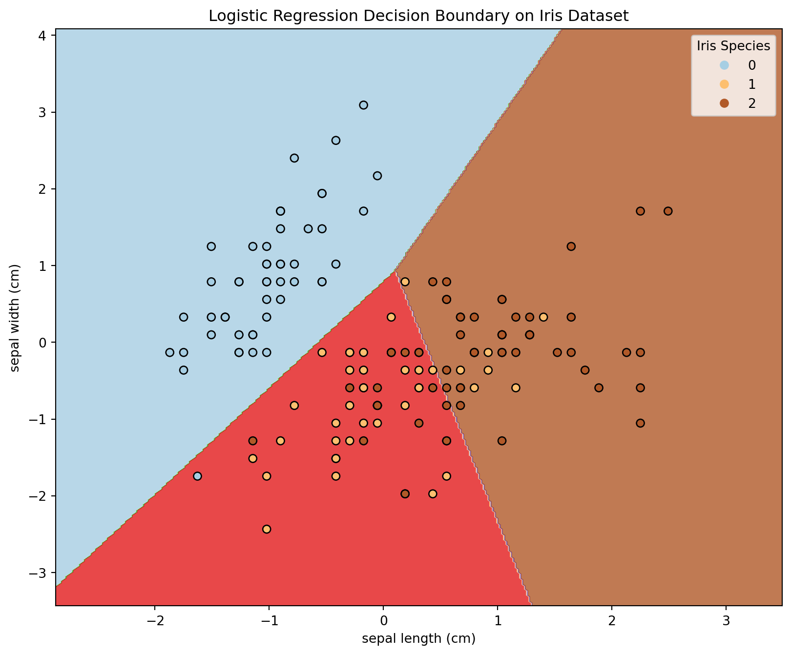
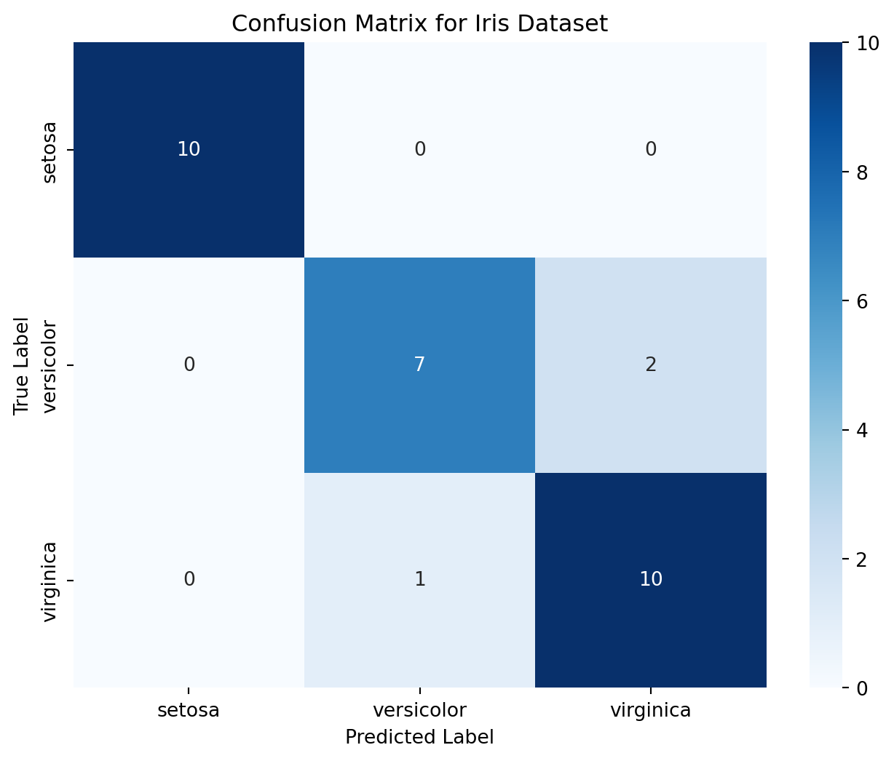

from sklearn.linear_model import LogisticRegression
from sklearn.datasets import load_iris
import numpy as np
import matplotlib.pyplot as plt
from sklearn.datasets import load_iris
from sklearn.model_selection import train_test_split
from sklearn.linear_model import LogisticRegression
from sklearn.metrics import accuracy_score
from sklearn.preprocessing import StandardScaler
# Load the Iris dataset
iris = load_iris()
X = iris.data[:, :2] # Selecting only the first two features for visualization
y = iris.target
# Standardize the features
scaler = StandardScaler()
X_std = scaler.fit_transform(X)
# Split the dataset into training and testing sets
X_train, X_test, y_train, y_test = train_test_split(X_std, y, test_size=0.2, random_state=42)
# Create a Logistic Regression classifier
log_reg = LogisticRegression()
# Train the classifier on the training data
log_reg.fit(X_train, y_train)
# Make predictions on the test data
predictions = log_reg.predict(X_test)Title: Classification
Introduction:
In this exploration, we’ll delve into classification in machine learning, emphasizing the process of building and interpreting models. We’ll use the well-known Iris dataset as our study subject, focusing on Logistic Regression, to highlight the versatility of machine learning algorithms in solving classification problems. At its core, classification in supervised learning involves teaching algorithms to categorize new data into predefined groups, based on patterns learned from labeled training data. For example, distinguishing different species of flowers based on their physical characteristics.
# Building Blocks for classification algorithm: Developing a successful machine learning model includes several key steps:
Data Collection and Preprocessing: Acquire a dataset reflective of the problem. Clean and preprocess this data to address missing values, outliers, and normalize features.
Splitting the Data: Partition the dataset into training and testing sets to train the model and then evaluate its performance on unseen data.
Choosing a Model: Opt for a suitable classification algorithm. Logistic Regression, unlike KNN, is a parametric algorithm ideal for binary and multiclass classification problems.
Training the Model: Allow the algorithm to learn from the training data, understanding the relationships between the features and the target labels.
Model Evaluation: Assess the model’s performance using accuracy, precision, recall, and other metrics on the testing set.
Fine-Tuning: Adjust the model parameters to enhance its performance.
Deployment: Deploy the model for predictions in real-world scenarios.
The Iris Dataset: A Case for Multiclass Classification The Iris dataset, a classic in machine learning, features measurements of iris flowers, categorizing them into three species based on physical traits. It’s perfect for demonstrating Logistic Regression in a multiclass classification setting.
Data Preprocessing for the Iris dataset might involve:
Feature Selection: Concentrating on specific features for better visualization and analysis. Standardization: Scaling the features to a uniform range to improve model accuracy.
Applying Logistic Regression to the Iris Dataset: Logistic Regression, a fundamental statistical method for classification, estimates the probabilities of class memberships. In the case of the Iris dataset, it can predict the likelihood of a flower belonging to a particular species.
How Logistic Regression Works: The operation of Logistic Regression encompasses several critical steps:
Probability Estimation:
Model Creation: Logistic Regression creates a model based on the training data. It calculates probabilities using a logistic function, where the probability of a particular class is estimated as a function of the input features.
Decision Boundary: Establishing a Linear Relationship: It finds a linear relationship between the input features and the log odds of the target variable. This relationship is used to estimate probabilities.
Classification:
Thresholding: After computing probabilities, Logistic Regression applies a threshold (commonly 0.5) to these probabilities to determine the class labels. If the estimated probability is higher than the threshold, the data point is assigned to one class; otherwise, it is assigned to the other class.
Logistic Regression’s effectiveness in modeling probabilities and its simplicity in creating linear decision boundaries make it an excellent choice for many binary and multiclass classification problems. The code that follows demonstrates how to visualize its decision boundaries.
The code showcases the class for each point on the data set is determined and visualize the decision boundaries.
accuracy = accuracy_score(y_test, predictions)
print(f"Accuracy: {accuracy:.2f}")
# Plot the decision boundary
h = 0.02 # Step size in the mesh
x_min, x_max = X_std[:, 0].min() - 1, X_std[:, 0].max() + 1
y_min, y_max = X_std[:, 1].min() - 1, X_std[:, 1].max() + 1
xx, yy = np.meshgrid(np.arange(x_min, x_max, h), np.arange(y_min, y_max, h))
# Predict the class for each point in the mesh
Z = log_reg.predict(np.c_[xx.ravel(), yy.ravel()])
Z = Z.reshape(xx.shape)
# Plot the decision boundary
plt.figure(figsize=(10, 8))
plt.contourf(xx, yy, Z, alpha=0.8, cmap=plt.cm.Paired)
# Plot the training points
scatter = plt.scatter(X_std[:, 0], X_std[:, 1], c=y, edgecolors='k', cmap=plt.cm.Paired)
plt.xlabel(iris.feature_names[0])
plt.ylabel(iris.feature_names[1])
# Add legend with target names
plt.legend(*scatter.legend_elements(), title="Iris Species")
plt.title('Logistic Regression Decision Boundary on Iris Dataset')
plt.show()Accuracy: 0.90
Interpreting the Visuals:
As we gaze upon the plot, each region’s color unveils the model’s decision boundary, distinguishing the wine classes. The scattered points represent the training data, each one contributing to the algorithm’s understanding of the dataset.
from sklearn.metrics import confusion_matrix
import seaborn as sns
conf_matrix = confusion_matrix(y_test, predictions)
plt.figure(figsize=(8, 6))
sns.heatmap(conf_matrix, annot=True, fmt='d', cmap='Blues',
xticklabels=iris.target_names, yticklabels=iris.target_names)
plt.title('Confusion Matrix for Iris Dataset')
plt.xlabel('Predicted Label')
plt.ylabel('True Label')
plt.show()
Interpreting the Confusion Matrix:
The confusion matrix offers a detailed assessment of a model’s predictive accuracy by dividing its predictions into four distinct types:
True Positives (TP): These are the instances where the model accurately identifies the positive class. True Negatives (TN): These occur when the model correctly predicts the negative class. False Positives (FP): These happen when the model incorrectly labels an instance as the positive class. False Negatives (FN): These are cases where the model fails to recognize the positive class.
In the context of the Iris dataset, using a Logistic Regression model, the confusion matrix becomes a critical tool for visualizing the model’s effectiveness in multiclass classification. Each cell in the heatmap represents the number of instances that were classified into particular categories, comparing the model’s predictions with the actual labels. The annotations in each cell quantify the model’s classification accuracy, and the varying shades of blue in the heatmap illustrate the degree of correct and incorrect predictions. This visual representation is particularly useful for identifying the classes that the model predicts most accurately and those where it may face challenges, providing a thorough and intuitive understanding of the model’s performance in classifying different species of iris flowers